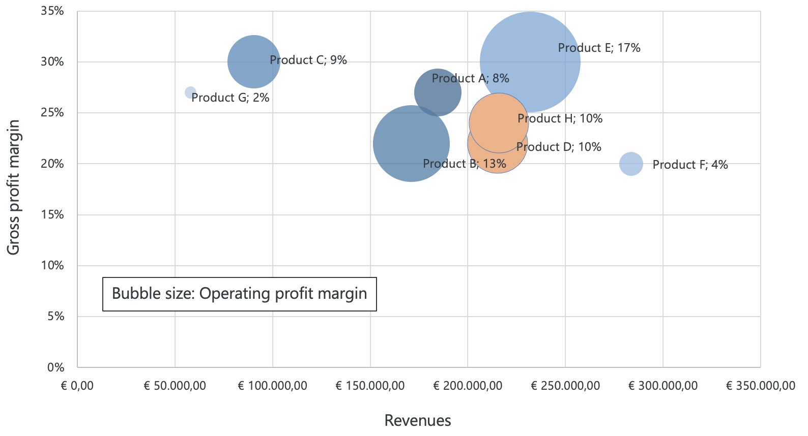
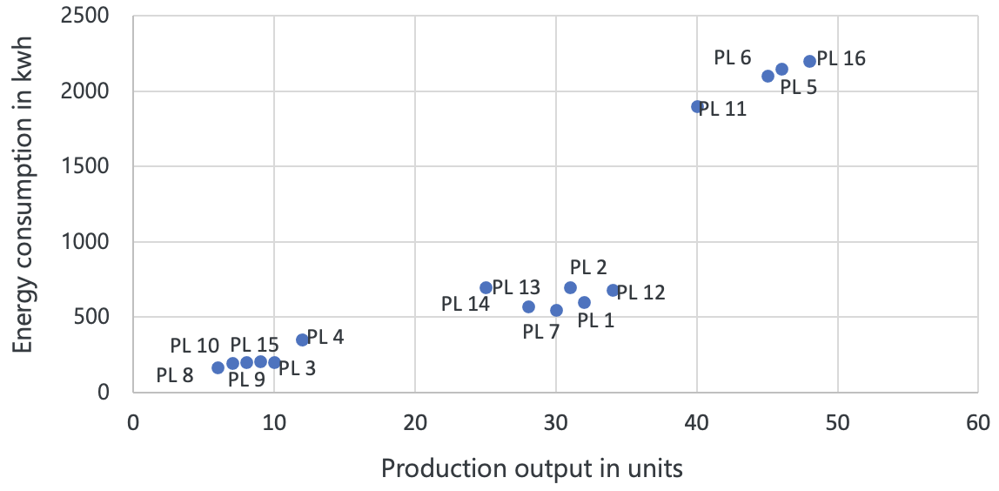
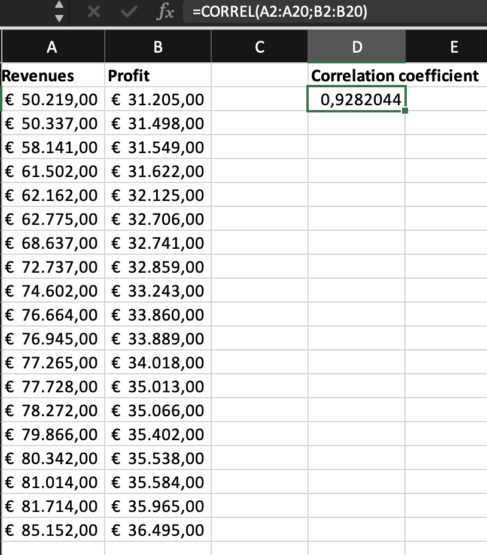

Understand the importance of identifying data patterns
Evaluate the relevance of visualization and statistical techniques for analyzing data patterns
Explain and tackle several data challenges
3.2 Definition of data patterns
A pattern is a recognizable feature or tendency that can be observed in a dataset. Data patterns are recurring or consistent structures or relationships in data that can provide valuable insights into trends, relationships, and underlying structures, and help to carve out areas for further investigation using more advanced analysis.
3.3 Importance of identifying data patterns
Identifying data patterns is the starting point in data-driven decision-making when it comes to digging into the data because it lays the foundation for understanding the relationships, trends, and insights hidden within the data. This understanding is crucial for making informed, evidence-based decisions, developing effective strategies, and gaining a competitive advantage as a business.
Data patterns serve multiple purposes:
Generating initial insights: Recognizing recurring structures or trends in data provides an early glimpse into how different factors - such as consumer behavior, expenses, or operational processes - might be interconnected.
Guiding further analysis: Patterns offer starting hypotheses about potential drivers of an outcome. These hypotheses can then be tested and refined through diagnostic or predictive models, enabling more precise and reliable conclusions.
Detecting anomalies: Patterns can highlight anomalies or outliers that deviate significantly from the norm. These may signal errors, fraud, or data quality issues that need prompt investigation.
Laying the groundwork for advanced techniques: Once key patterns are recognized, deeper analyses (e.g., causal modeling, predictive analytics) can follow. This helps to move from merely spotting patterns to fully exploiting them for improved decision-making.
As you will see in the next section, examples drawn from various types of data - such as customer, financial, operational, marketing, or employee data - illustrate how identifying and examining patterns can show pathways to more detailed investigation and action.
While going through the chapter, please keep in mind that the examples form a basis for further investigations. Identifying data patterns using visualizations or basic statistics is usually the first step that paves the way for more advanced analysis which justifies the term “data-driven decision-making”. Of course, you could stop your investigation after analyzing data patterns and make your own assumptions about the origins of the pattern and what it implies for the company’s future, but you would miss out on the chance of what the true purpose of data-driven decision-making is: improving decision-making in an organization.
3.4 Examples of data patterns
3.4.1 Customer data
A business tracks metrics like purchase frequency, product categories, and seasonal buying patterns.
Example 1: Sales data reveals a particular product is consistently purchased in two-week intervals. Further investigation ties this pattern to the product’s short shelf life, prompting adjusted inventory practices to be stocked up at the right moment and promotional tactics.
Example 2: Purchases spike around specific holidays. The company discovers this is linked to seasonal promotions, guiding more precise marketing campaigns during those periods.
Identifying these patterns helps businesses optimize product availability and tailor promotions to customer buying behaviors.
3.4.2 Financial data
A company monitors expenses across categories, budget allocations, and cash flows.
Example 1: Travel costs regularly exceed targets. Further analysis links the overrun to frequent business trips; the company curbs costs through video conferencing and travel agency discounts.
Example 2: Multiple expense categories go over budget due to weak oversight. The firm introduces stricter policies and tracking tools, reducing overspending and boosting transparency.
As you see, looking for patterns in expense data helps with the control of costs.
3.4.3 Operational data
Imagine a manufacturing business collects data on its production processes, including the time it takes to complete each stage of production and the number of defects per batch.
Example 1: Defect rates spike at a specific production step. Further study discovers faulty machinery, leading to repairs or process adjustments that cut defects.
Example 2: Persistent bottlenecks emerge in one stage of the workflow. Deeper analysis ties them to inadequate resources, prompting workforce adjustments or supply chain improvements.
Also here, monitoring production data and identifying data patterns helps the company to improve its production processes and reduce waste.
3.4.4 Marketing data
A company is collecting data on its marketing campaigns, including the channels used for advertising and the response rates from customers.
Example 1: Personalized emails yield significantly higher conversions. Further review credits tailored messaging with greater relevance, prompting the company to invest more in personalization.
Example 2: Response rates dip when messages go out during certain weekdays. Investigation finds customers are busy during working hours, prompting a revised schedule to optimize engagement.
In both cases, the pattern in marketing data is a first insight that can help the business to improve its marketing campaigns and increase its response rates and customer engagement.
3.4.5 Employee data
Imagine a company that has been tracking employee turnover.
Example 1: Certain departments suffer higher turnover, especially among newer hires lacking career growth. Improvements in onboarding and promotion pathways help retain talent.
Example 2: Surveys show higher satisfaction among employees with flexible schedules. In response, leadership expands remote and adjustable work-hour options to boost morale and retention.
Both examples show how the identification of simple patterns can kick off analyses to decrease turnover and increase job satisfaction.
Note, all of the examples above are sort of “shortcuts” from looking at rough data patterns to solutions. Of course, as you know from our framework, there are more steps involved to get to the eventual solution.
3.5 Techniques for identifying data patterns
3.5.1 Start with the right mindset
First and foremost, it’s important to approach the data with a sense of curiosity and a desire to understand what it’s telling you. This means asking questions and exploring different angles, rather than simply accepting what you see at face value. By staying curious, you can uncover unexpected insights that might not be immediately obvious. At the same time, it’s important to maintain objectivity when analyzing data. Avoid making assumptions or jumping to conclusions based on preconceived notions. Instead, let the data guide your thinking, and be willing to challenge your own assumptions if the data suggests a different interpretation. This can be particularly challenging if you have pre-existing beliefs about what the data should show, but it’s important to keep an open mind and let the evidence speak for itself. It can be tempting to latch onto a particular idea or theory and look for evidence to support it, but this can lead to confirmation bias and blind you to other potentially important insights. By using a systematic approach like our framework, you can ensure that you’re analyzing the data in a consistent and rigorous manner, which can help you identify meaningful patterns more easily.
When analyzing the data, it is key to put yourself into the “shoes of the data-generating process”. A data-generating process helps business analysts to understand the underlying mechanism that produces the data they are working with and defines the factors that affect the data and how they contribute to its creation. For example, if you want to look into customer behavior, imagine how you act as a customer. Imagine that you are making certain decisions and take actions, thereby actually creating the data (assuming that there is some type of variable measured and recorded that will reflect your decisions and actions). The figure below shows many factors that can influence our buying behavior.
Figure 3.1: Buyer decision process
For example, what aspects would make you enter a drugstore and what aspects would keep you away from the store? Large price boards in the windows, commercial boards standing on the street, or employees handing out samples? Or, what kind of aspects make you choose one hotel, but not the other? Price, proximity to the city center, or the cleanliness rating? And again, then hopefully you have data in your datasets that reflect or at least approximate these aspects such that you can use the data for your analysis. These examples are a bit easier to imagine as all of us are customers at some point. However, when you want to analyze bottlenecks in a production process, you probably have to consult your colleagues involved in the production. But even for the customer behavior example, it may be wise to contact colleagues from marketing to get a better picture of decisions customers typically make. You can get additional information from professional magazines or academic papers to put yourself into the data-generating process. Finally, it’s important to be patient when analyzing data. Finding patterns in data can take time and require persistence. Don’t expect to find all the answers right away, but be willing to put in the effort to uncover insights that can lead to better business decisions.
3.5.2 Visualization techniques for identifying patterns
Now that we have the data, we want to start uncovering the story that the data tells us. Visualizing data and looking for distinct patterns is a way to accomplish this. There can be details that, when the data is given in tabular form, we are unable to perceive but which are made clear to us through visualization (see example Section 2.3.2).
The human brain is wired to process and interpret visual information quickly, and data visualization leverages this natural ability to help us understand complex data more easily. By using charts, graphs, and other visual representations of data, we can identify relationships, trends, and outliers that might be difficult to spot using only numerical summaries. Visualization can also help us communicate insights more clearly and effectively to others, making it an essential tool in data-driven decision-making (which is covered at a later moment in this course).
Before jumping into the creation of visualizations, there are two questions relating to the nature and purpose of our visualization which help us decide on the type of visualization (Berinato 2016):
The first question is quite easy to answer given the title of our course - the nature of our information is based on data. We are not exploring concepts or ideas that we want to visualize, but we want to use data.
The second question gets at the purpose of the visualization: do you want to provide information (declarative) or try to figure something out (exploratory)? Currently, we are still in the phase of figuring out things with the help of data visualization, so by putting the answers to the two questions together, we find ourselves in the bottom right corner, the visual discovery. Only at a later stage, we want to communicate information (such as the solution to the case), being in the everyday dataviz quadrant.
For the purpose of exploring data, we look at different types of patterns, each coming with typical forms of visualization.
3.5.2.1 Distributions
Before looking at the relationships and patterns of our data and variables, it may be useful to get a “feeling” for the key variables in the dataset and visualize some characteristics of these variables. For these visual insights, we typically rely on histograms, bell curves, and box plots to understand the distribution of each variable. We get a quick overview of “what the data looks like,” which helps us make more informed decisions about which advanced methods to use and how to interpret subsequent analyses.
A histogram is a type of graph that displays the frequency distribution of a continuous or discrete variable, such as sales, revenue, customer demographics, or product performance. By grouping the data into bins or intervals, histograms provide a visual representation of the underlying patterns in the dataset. Histograms are commonly used to identify the shape and spread of a dataset.
For example, let’s say you work with a marketing analyst at your company and you analyze the distribution of customer ages in your customer database. You create a histogram where the x-axis represents age intervals, and the y-axis represents the count of customers falling within each age interval.
By examining the shape of the histogram, analysts can identify trends and patterns, such as whether the distribution is symmetric, skewed, or has other notable characteristics. Histograms can help analysts to visualize various statistical measures, such as the mean, median, mode, and measures of dispersion (e.g., variance or standard deviation) (see Section 3.5.3). In the example above, you see that it seems that customer age follows a normal distribution (see also bell curve). You also see whether there is any interesting variation in the data useful for further statistical analysis. E.g., if all age bins would contain the same number of customers, there is no age variation that can be used to explain, e.g., customer behavior. However, we do not need to worry in this example as we can identify variation from the age bins. Furthermore, histograms can serve as a basis for fitting parametric models, such as normal, log-normal, or exponential distributions, to the data. These models can then be used for predictive analytics, forecasting, and other advanced statistical analyses, which can provide valuable insights for decision-making and strategic planning. Additionally, from a business decision perspective, you can identify any patterns that may exist in the age distribution of your customer base. In this example, you see that most customers are between 48 and 52 years old. This information can help guide marketing efforts towards the specific age group that is most likely to purchase your products or services. At the same time, if you believe that your product or service should theoretically be very interesting for people of the age around 35, you could further investigate reasons why people in that age category do not buy the product as much. Additionally, histograms can be used to identify any potential outliers or unusual patterns in the customer age data. For example, if the histogram reveals a sudden spike in a specific age group, it might indicate a data entry error, an anomaly in the dataset, or an emerging trend that requires further investigation. Another application of histograms in analyzing customer age data is to compare the age distribution of different customer segments, such as those who make online purchases versus those who shop in-store. By comparing the histograms, a business can identify differences in customer preferences and behaviors, allowing it to fine-tune its marketing and sales strategies accordingly.
Similar to a histogram, you may come across a bell curve (also known as normal distributions or Gaussian distributions).
Bell curves are relevant for further statistical analysis, as they come with specific properties that can simplify calculations and provide a foundation for hypothesis testing and other statistical procedures. When data follows a normal distribution, the mean, median, and mode are equal, and approximately 68% of the data falls within one standard deviation of the mean, 95% within two standard deviations, and 99.7% within three standard deviations.
A box plot, also known as a box-and-whisker plot, is a type of chart that displays the distribution of data by showing its median, quartiles, and outliers.
The box (IQR): The rectangular box captures the middle 50% of the data - what’s called the interquartile range (IQR, see Section 3.5.3.1.4). In this chart, the bottom edge of the box is at 40, which is the 25th percentile (Q1), and the top edge is at 57, the 75th percentile (Q3). Because this box is reasonably large, it indicates there’s a moderate spread among the “central” half of the data (from ages 40 to 57).
Median line: The horizontal line inside the box is the median (Q2). Here, it sits at 49, roughly halfway between 40 and 57. Because the median is fairly centered between Q1 and Q3, we can see the central 50% of ages is split somewhat evenly above and below 49.
Whiskers: The “whiskers” are those lines extending above and below the box to show the minimum and maximum values that still fall within a typical cut-off (often 1.5 × IQR). In the figure, the lower whisker extends down to 22; the upper whisker extends up to 72. That means any data points above 72 or below 22 are treated as outliers (if they exist).
Outliers: Any data point lying outside these whisker boundaries is plotted individually - often as a separate dot or symbol. In this example, there is a single red dot at 13, clearly below the lower whisker. This dot is considered an outlier, meaning it sits well below the rest of the dataset.
Possible interpretations: The presence of this outlier at age 13 could be a legitimate value (e.g., an unusual case in your data) or might be a simple data entry error. Seeing only one lower outlier suggests that most ages cluster within 22 to 72, which you might interpret as a reasonably “normal” spread for a particular adult population - aside from that lone point at 13.
3.5.2.2 Relative proportions
Proportions refer to the comparison of data between different groups or categories, and involve examining how data varies relative to other factors. Imagine a simple count of employees in different age categories, revenues per product line, or marketing expenses per marketing channel. Common visualizations to express proportions are pie charts or tree map charts (amongst others).
A pie chart displays categorical data in a circle divided into slices, each slice representing a portion of the whole. The entire circle equals 100% of the data, and each slice’s size corresponds to its category’s share. Pie charts are useful for quickly comparing the relative sizes of categories and spotting the largest or smallest groups.
Imagine you help out your colleagues from HR. The pie chart above displays HR firm data on age categories and proportion of employees in their respective age categories. This information helps you understand the age distribution of your workforce. You can quickly identify that the age group of employees between 41 and 50 is most frequently observed in that firm. In addition, you see that there is a relatively low inflow of younger people. This is alarming if you think about succession and business continuity, and further analysis is needed in that regard.
A tree map chart is a type of chart that displays hierarchical data as a set of nested rectangles. The size and color of the rectangles represent the relative sizes of the different categories or data points, with larger rectangles representing larger values and different colors representing different categories.
Suppose the marketing manager of your firm approached you to dig into their expense data. The tree map above includes marketing data on the expenses per marketing channel, with TV ads clearly making up the largest proportion of expenses. This information helps you understand how your marketing expenses are allocated across different channels and you can start further investigations into how far each channel is successful in, e.g., acquiring new customers, and whether the expenses allocated to the respective channels are justified.
3.5.2.3 Ranking
Ranking in the context of data visualization refers to the process of ordering data points based on a specific variable or criterion. This allows for the quick identification of the highest or lowest values. The most common visualizations are bar charts and radar charts (amongst others).
A bar chart, also known as a bar graph, is a type of chart or graph that represents data using rectangular bars. The length or height of each bar is proportional to the value it represents. Bar charts can be used to display data in horizontal or vertical orientation, with the latter usually called a column chart (see also Section 3.5.2.5).
Code
Z <-data.frame(product =paste("Product", LETTERS[1:5]),failure_rate =c(0.083, 0.015, 0.02, 0.032, 0.038))Z$status =if_else(Z$failure_rate >0.05, "bad", "ok")ggplot(Z,aes(y =fct_reorder(product, -failure_rate),x = failure_rate,fill = status ),) +geom_col(color ="white") +scale_fill_manual(values =c("ok"="#3082BD", "bad"="#CC0000")) +scale_x_continuous(labels = scales::label_percent(), expand =expansion(c(0, 0.02))) +theme(text =element_text(family ="Roboto"),legend.position ="none",panel.grid.major.y =element_blank() ) +geom_vline(xintercept =0.05) +annotate("text", x =0.05, y =1, label ="5% threshold", vjust =0.5, hjust =-0.1, family="Roboto") +labs(y =NULL,x ="Failure rate after x months" )
Figure 3.8: Bar chart
Suppose you support a quality control manager at your manufacturing company. The bar chart above includes failure rates per product category. It becomes clear that Product A should be more closely investigated given the seemingly higher failure rate compared to the other products. Notice how small tweaks add to make the punch line of the plot as obvious as possible: the choice of two colors, annotating the plot with a vertical line, and ordering the products so that the “worst” product is at the bottom.
A radar chart, also known as a spider chart or a web chart, is a type of chart that displays data on a polar coordinate system. Radar charts are useful for comparing multiple sets of data across different categories or variables. Each set of data is represented by a different line or shape on the chart, with each variable represented by a spoke. The length of each line or shape corresponds to the magnitude of the data for that variable, and the different lines or shapes can be compared to one another.
Imagine you help a product manager at your retail company. In the radar chart above, three products are compared based on their properties of price, quality, popularity, and durability. An interesting observation, e.g., is that Product C has the highest price and highest popularity while having the lowest quality. This is interesting because usually, one would expect that a high price and low quality would negatively affect popularity, so it is worth further investigating whether, e.g., a certain minimum requirement for quality is already met and therefore does not impact popularity.
Another important use of visualizations: This interesting finding could also hint at a data problem. Visualization can also help us identify data quality issues, such as missing or outlier values, which may be less noticeable when examining raw data. Any data points out of order may provide a signal for you to review the quality of the data (see also Section 3.6).
3.5.2.4 Clustering
Clustering in the context of data visualization refers to the process of grouping data points together based on their similarities or proximity to one another. Common visualizations are bubble charts and scatter plots (amongst others).
A bubble chart is a type of chart that displays data points as bubbles or circles on a two-dimensional graph. Each bubble represents a data point and is located at the intersection of two variables on the graph. The size of the bubble represents a third variable, typically a quantitative value, and can be used to convey additional information about the data point. Bubble charts are useful for displaying data with three variables, where two variables are plotted on the x- and y-axes, and the third variable is represented by the size of the bubble. This allows for the visualization of complex relationships between variables and can be used to identify patterns or trends in the data.

Figure 3.10: Bubble chart
Imagine you help the controller in your retail company. The bubble chart above reflects financial data on each product’s revenue (x-axis), gross profit margin (y-axis), and operating profit margin (bubble size). The bubble chart allows you to quickly identify which products are generating the most revenue (Product F) and gross profit margin (Product C and E), as well as which ones have the highest operating profit margin (Product E). You could also identify any outliers, such as products with high revenue but low gross profit margin (Product F), or a product with low revenue but high operating profit margin (Product C). This information provides a first insight into which products to invest in, which ones to cut back on, and how to optimize your overall financial performance. Furthermore, you can color-code the bubbles based on the product category or production location to find patterns in other common characteristics, or clusters. Suppose that the orange bubbles represent the same production site: this could indicate that the production is similarly efficient as both products have an operating profit margin of 10% (and have similar revenue and gross profit margins). However, as with all initial evidence based on data patterns, this has to be further investigated as there might be many more reasons for such a similar operating profit margin.
A scatter plot is a type of graph that uses dots to represent values for two different variables. The position of each dot on the graph represents the values of the two variables.

Figure 3.11: Scatter plot
Suppose you help a plant manager at your manufacturing company, and you want to analyze the relationship between production output and energy consumption. You have data on the daily production output (x-axis) and energy consumption (y-axis) for each production line (PL) over the past year. First of all, you notice that there appears to be a relationship between production output and energy consumption. In addition, several clusters of data points are tightly grouped together. It appears that the product lines in the cluster in the middle may be more energy-efficient than others in their production given that the cluster appears low on the y-axis. Scatter plots are also useful to detect outliers which would imply that one (or multiple) of the data points would appear further away from the other clusters.
3.5.2.5 Change
In the context of data patterns, changes or trends, refer to a general direction or tendency in the data that shows a pattern over time. Trends can be further classified as upward, downward, or flat, depending on the direction of the trend. Line graphs and column charts (amongst others) are commonly used to depict changes and trends.
Line graphs are a type of graph that display data points as a series of connected points, or markers, that form a line. They are commonly used to show trends or changes in data over time. The x-axis typically represents the time period, while the y-axis represents the value of the variable of interest.
Figure 3.12: Line graph
For example, let’s say you help out a human resources manager at your company and you want to track changes in employee turnover over time. The line graph above shows the number of employees who have left the company each month over the past year. The x-axis would represent the months of the year, while the y-axis would represent the number of employees who left. You notice a sudden increase in employee turnover in June, July, and August, and you can further investigate the root cause of this upward “summer” trend.
Column charts, also known as vertical bar charts, are a type of graph that uses vertical bars to represent data. Each column or bar represents a category or group, and the height of the bar corresponds to the value or frequency of the variable being measured.
Figure 3.13: Column chart
Imagine the marketing assistant approached you to help with some data analysis tasks. You should analyze the total sales revenue over the past year. You can create a column chart where the x-axis represents the different time periods, such as months, and the y-axis represents the total sales revenue for each month. In the above column chart, you quickly identify that sales are uncommonly low in July, and increasing in November and December. By repeating this analysis across multiple years, you may see that this is a consistent pattern across years, and you have a starting point to look closer into the causes of this pattern.
3.5.2.6 Correlations
To identify correlations between variables visually, most often scatter plots are used as well.
Figure 3.14: Scatter plot
Figure 3.15: Scatter plot
Imagine a friend of yours is a financial analyst, and asks you to check the relationship between revenue and expenses of a company over the past year. You can create a scatter plot where the x-axis represents revenue, and the y-axis represents expenses. Let’s look at two different outcomes. If the outcome looks like the first scatter plot, you can most likely conclude from the visual that there is no correlation between revenues and expenses. If you consider the second scatter plot, it appears that there is a correlation between revenues and expenses. You conclude that both variables move in the same direction, and you can further investigate the underlying reasons.
And that was a journey throughout the most common charts and graphs used to identify data patterns. Yet, in general, it should be noted that some charts can be used for multiple purposes. For example, a bar chart can also be used to identify relative proportions. The number of categories represented in such charts also has an influence on the choice. For example, if a firm has 30 different products, it may indeed be wise to use a bar chart or column chart to represent those products; a pie chart would be too cramped to read given many “pie pieces” reflecting the products. But some types of visualizations are also simply not useful for some purposes. For example, if we want to identify any changes over time, a pie chart is not going to help us reflecting such changes.
3.5.3 Statistical techniques for identifying patterns
Statistical techniques are essential for exploring data patterns because they provide us with a framework for analyzing and interpreting data in a rigorous and systematic way. While visualizations are a great approach to start the analysis process, eventually we also want to “crunch” the numbers.
3.5.3.1 Descriptive statistics
3.5.3.1.1 Measures of central tendency (mean, median, mode)
Measures of central tendency are statistical measures that describe the central or typical value of a set of data. They are often used to summarize large datasets and provide insights into the characteristics of the data. The three most common measures of central tendency are mean, median, and mode.
The mean (\(x̄\)) is the arithmetic average of a set of numbers. It is calculated by adding up all the values in a set and dividing the sum by the number of values. The mean is sensitive to outliers in the data, which can greatly influence its value. For example, if we have a dataset of 5, 10, 15, 20, and 25, the mean would be (5+10+15+20+25)/5 = 15.
The median is the middle value in a set of numbers, arranged in ascending or descending order. It is less sensitive to outliers than the mean and provides a better representation of the typical value in a dataset. If the dataset has an odd number of values, the median is the middle value. For example, if we have an uneven dataset of 5, 10, 15, 20, and 25, the median is 15. If the dataset has an even number of values, the median is the average of the two middle values. For example, if the dataset is 4, 6, 8, 10, 12, 14, we would first order the values as 4, 6, 8, 10, 12, 14. The two middle values are 8 and 10, so we would take their average: Median = (8 + 10)/2 = 9.
The mode is the value that occurs most frequently in a set of numbers. It is useful for identifying the most common value in a dataset. For example, if we have a dataset of 5, 10, 10, 15, 20, and 25, the mode would be 10.
Their practical relevance comes from how they help decision-makers quickly review typical outcomes and compare different groups, for example:
Resource allocation: A company might use average (mean) sales figures to forecast inventory needs, staff scheduling, or budget allocations. When the mean shifts, it signals a change in the overall sales level.
Benchmarking and targets: The median is useful for setting realistic performance goals. For instance, if the median time to resolve a customer complaint is 10 minutes, managers can target reducing that to 8 minutes for half of all complaints.
Customer segmentation and pricing: The mode (most frequent value) can identify common consumer purchase sizes or price points. Companies can tailor product bundles or promotional strategies around those “popular” values.
Comparison across categories: Whether reviewing different teams, product lines, or regional markets, a quick view at central tendencies reveals which group stands out or underperforms, prompting further analysis.
By summarizing a dataset in a single number, measures of central tendency give a fast, high-level understanding, guiding more in-depth analysis and informing business actions such as budgeting, staffing, marketing adjustments, etc.
3.5.3.1.2 Measures of variation (range, variance, standard deviation)
Measures of variation are statistical measures that describe the spread or dispersion of a set of data. They are used to determine how much the individual values in a dataset vary from the central tendency. There are several measures of variation, including range, variance, and standard deviation.
The range is the difference between the highest and lowest values in a set of data. It provides a simple measure of the variability in a dataset but can be heavily influenced by outliers. For example, if we have a dataset of 5, 10, 15, 20, and 25, the range would be 25-5 = 20.
The variance (\(s^2\)) measures how spread out the data is from the mean. It is calculated by taking the average of the squared differences between each value and the mean of the dataset. The variance is useful for identifying the degree of variability in the data but is not easily interpretable due to its squared units. But it provides a more precise measure of variability than the range and is less sensitive to outliers. For example, if we have a dataset of 5, 10, 15, 20, and 25, the mean is (5+10+15+20+25)/5 = 15. The differences between each value and the mean are -10, -5, 0, 5, and 10. Squaring these differences gives us 100, 25, 0, 25, and 100. The variance is the average of these squared differences, which is (100+25+0+25+100)/5 = 50.
The standard deviation (\(s\)) is the square root of the variance. It is a commonly used measure of variation because it is expressed in the same units as the data (and hence more interpretable measure of dispersion than the variance) and provides a measure of how spread out the data is relative to the mean. For example, if we have a dataset of 5, 10, 15, 20, and 25, the variance is 50. The standard deviation is the square root of 50, which is approximately 7.07.
Measures of variation (range, variance, standard deviation) do more than just describe data spread; they have practical relevance for data-driven decision-making:
Risk and uncertainty: A high variance or standard deviation in sales forecasts, for example, alerts you to potential volatility. This helps a business decide whether to keep a buffer of inventory, expand safety stock, or take out insurance on price fluctuations.
Reliability of averages: If the mean is 50 but the standard deviation is large, it means your data values are scattered widely around that mean. A “typical” value is then less representative. Managers can’t blindly rely on the average if performance swings wildly.
Resource allocation: When project costs, labor hours, or production output vary substantially, the business may adopt more conservative budgeting or scheduling. Understanding variation helps allocate resources more effectively and anticipate spikes or dips.
Identifying patterns and outliers: While the average might mask interesting details, measures of variation show you whether data points are clustered or spread out. A suddenly larger-than-usual spread can flag data quality issues or changing market conditions that warrant deeper investigation.
Planning and forecasting: Stable (low-variance) processes can be forecasted more reliably. Where the standard deviation is large, you know to proceed with caution—or invest in better predictive methods.
By integrating measures of variation into your initial data exploration, you gain a clearer picture of how much confidence (or uncertainty) you should place in averages, projections, and other core metrics. Below you find the standard R code to compute mean, median, mode, range, variance, and standard deviation of a variable.
Code
# Example R codes to display mean, median, mode, range, variance, standard deviation of a variable# x <- c(4, 7, 9, 3, 5, 6, 4, 9, 7)# Mean# mean(x)# Median# median(x)# Mode (most frequent value)# mode_value <- names(sort(table(x), decreasing = TRUE))[1]# mode_value# Range (returns min and max)# range(x)# Range as a single number (max - min)# diff(range(x))# Variance# var(x)# Standard Deviation# sd(x)# Minimum# min(x)# Maximum# max(x)# Summary of all basic stats# summary(x)
3.5.3.1.3 Skewness and Kurtosis
Skewness and kurtosis are two additional statistical measures that are often used to describe the shape and distribution of data.
Skewness measures the degree to which a dataset is skewed or distorted from a normal distribution, that is, the degree of asymmetry in a distribution. A normal distribution is a symmetric distribution where the mean, median, and mode are all equal. A dataset with positive skewness has a long tail on the right side of the distribution, meaning there are more extreme values on the right-hand side of the distribution. A dataset with negative skewness has a long tail on the left side of the distribution, meaning there are more extreme values on the left-hand side of the distribution.
Figure 3.16: Skewness
Source: https://www.biologyforlife.com/skew.html
Skewness is often measured using the coefficient of skewness, whose calculation we leave to our favorite program.
If the coefficient of skewness is positive, the dataset is positively skewed, while if it is negative, the dataset is negatively skewed. If it is zero, the dataset is normally distributed. A rule of thumb states the following:
If skewness is less than −1 or greater than +1, the distribution is highly skewed.
If skewness is between −1 and −.5 or between +.5 and +1, the distribution is moderately skewed.
If skewness is between −.5 and +.5, the distribution is approximately symmetrical.
Kurtosis measures the degree to which a dataset is peaked or flat compared to a normal distribution. A distribution with a high kurtosis value has a sharp peak and fat tails, meaning there are more extreme values in the tails of the distribution. A distribution with a low kurtosis value has a flatter peak and thinner tails. The calculation is a little more complicated, so let’s save some space and rely on our programs to calculate it.
A normal distribution has a kurtosis of 3. If the coefficient of kurtosis is greater than 3, the dataset has positive kurtosis (more peaked), while if it is less than 3, the dataset has negative kurtosis (more flat).
In summary, skewness and kurtosis highlight how a dataset’s shape deviates from a perfect bell curve. These details can also reveal extremes that basic averages overlook. For example, a strong right skew might mean most sales are moderate but occasionally spike, something you should look into. A high kurtosis indicates heavier tails, alerting you to a higher likelihood of rare, for example, costly events. Below the R code as well.
Code
# Example R codes to display skewness and kurtosis of a variable# x <- c(4, 7, 9, 3, 5, 6, 4, 9, 7)# Install the e1071 package if not already installed# install.packages("e1071")# Load the e1071 package# library(e1071)# Skewness (measure of asymmetry)# skewness(x)# Kurtosis (measure of the "tailedness")# kurtosis(x)
As you can see from the figures, measures of central tendency and variation are typically related to visualizations such as histograms or scatters with lines and markers.
3.5.3.1.4 Outliers
Outliers are data points that are significantly different from the other data points in a dataset. As outliers can have a significant impact on the results of statistical tests and models, we would also like to briefly mention statistical techniques to identify such outliers.
The Z-score is a standardized measure that represents the number of standard deviations a data point is away from the mean of the dataset. A high absolute value of the Z-score indicates that the data point is far from the mean, which can be considered an outlier. To detect outliers using the Z-score method, the typical threshold for the Z-score is usually |Z| > 2 or |Z| > 3.
Using the Z-score method assumes that the data is normally distributed. Outliers are identified based on their distance from the mean in terms of standard deviations. However, this method can be sensitive to extreme values, which might affect the mean and standard deviation calculations.
The interquartile range (IQR) is a measure of statistical dispersion that represents the difference between the first quartile (Q1, 25th percentile) and the third quartile (Q3, 75th percentile) of the data. The IQR is less sensitive to extreme values than the mean and standard deviation, making it a more robust method for detecting outliers.
The IQR method does not rely on the assumption of a normal distribution and is more robust to extreme values than the Z-score method. However, it might not be as effective in detecting outliers in datasets with skewed distributions. Therefore, using multiple methods to detect outliers can give a more complete picture.
See the R codes for the Z-score and IQR below.
Code
# Example R codes to display Z-score and IQR of a variable# x <- c(4, 7, 9, 3, 5, 6, 4, 9, 7)# Z-scores# z_scores <- (x - mean(x)) / sd(x)# z_scores# Compute quartiles# Q1 <- quantile(x, 0.25)# Q3 <- quantile(x, 0.75)# Compute IQR# IQR_value <- IQR(x)# Compute lower and upper bounds# lower_bound <- Q1 - 1.5 * IQR_value# upper_bound <- Q3 + 1.5 * IQR_value# Identify outliers# outliers <- x[x < lower_bound | x > upper_bound]# View results# IQR_value# lower_bound# upper_bound# outliers
3.5.3.2 Correlation analysis
While correlations can be depicted visually, a correlation can also be measured statistically, quantifying the strength and direction of the relationship between two variables. The most widely used correlation coefficient is the Pearson correlation coefficient, also known as Pearson’s r.
Table 3.1: Correlation coefficient

The correlation coefficient is a numerical value that ranges from -1 to +1. A correlation coefficient of -1 indicates a perfect negative correlation, where one variable increases as the other variable decreases. A correlation coefficient of +1 indicates a perfect positive correlation, where both variables increase or decrease together to the same extent. This may help, for example, in a situation where you have to decide between using two measures. Imagine you have to decide whether you want to use revenues or profit to proxy for firm performance. If these variables correlate (nearly) a 100%, it does not matter which variable you use all analysis outcomes will be the same. A correlation coefficient of 0 indicates no correlation between the variables. Furthermore, we use the following rule of thumb to describe the strength of a correlation (this rule might differ slightly across disciplines):
r = 0: No linear relationship between the variables.
0 < |r| < 0.3: A weak or negligible linear relationship.
0.3 ≤ |r| < 0.5: A moderate linear relationship.
0.5 ≤ |r| < 0.7: A strong linear relationship.
0.7 ≤ |r| ≤ 1: A very strong linear relationship.
Correlations help identify relationships between variables that might not be readily apparent through visual inspection alone. By quantifying the relationship, correlations provide a more objective basis for understanding the associations between variables in a dataset. Further, correlations help business analysts to generate hypotheses about the underlying causes or drivers of the observed relationships. While some common knowledge or gut feeling may be useful to start with, we want to train how to use data to guide the analysis process. Insights from correlations help us to complement our personal views, and provide more structured evidence rather than gut feeling does. These preliminary hypotheses can then guide further investigation and advanced analysis. That is, although correlations do not imply causation, they can provide initial evidence for potential causal relationships between variables. By identifying strong correlations, researchers can prioritize further investigation into causal relationships, using methods such as controlled experiments, natural experiments, or more advanced statistical techniques like instrumental variables.
An example is the correlation between advertising spending and sales revenue. A company might want to know whether its advertising efforts are related to increased sales. To test this correlation, the company could collect data on its advertising spending and its sales revenue over a period of time, such as a quarter or a year. The company could then use the Pearson correlation coefficient to calculate the strength and direction of the correlation between the two variables. If there is a strong positive correlation between advertising spending and sales revenue, the company can conclude that advertising efforts and sales move together. On the other hand, if there is no or a weak correlation, the company may need to rethink its advertising strategy or explore other factors that may be affecting sales revenue.
CAUTION!!!: Again, as stated above, correlation is not causation (and never ever write in your exams, assignment, or reports that one variable affects/impacts/influences/or increases another variable when you refer to correlations :))! While advertising spending and sales might move in the same direction, this does not automatically imply that the increase in sales is caused by the increase in advertising spending. Consider the following famous example on the correlation between ice cream sales and drowning deaths. Both variables tend to increase during the summer months, leading to a correlation between the two. However, this correlation is spurious, as there is no causal relationship between the two variables. In reality, the correlation is likely driven by a third variable, such as warmer weather. Warmer weather may lead to increased ice cream sales, as people seek cold treats to cool down, and may also lead to increased swimming and water activities, which could increase the risk of drowning deaths. Therefore, while the correlation between ice cream sales and drowning deaths may seem to suggest a causal relationship, it is actually spurious and driven by a third variable.
An example of spurious correlation in the business context could be the correlation between heating expenses and sales numbers. While there may be some anecdotal evidence to suggest that a comfortable office temperature can improve employee productivity, that does not imply that there is a structural causal relationship between the two variables. If the business analyst were to find a correlation between heating expenses and sales, this would likely be spurious. The correlation may be due to a third variable, such as seasonality: in the winter, employees might be less likely to take holidays, which may imply longer presence at the office (which increases heating expenses) and simultaneously imply more working hours - hence the increase in sales. So we need to be cautious and avoid drawing causal conclusions based on a potentially spurious correlation. It is essential to carefully consider the underlying data and any potential confounding variables before making any changes to office temperature or other policies that may impact sales; more advanced econometric analyses are required to determine causality.
3.6 Data challenges
It would be great if the data would come in a form that we can directly analyze. However, this is, unfortunately, literally never the case. Below we describe some of the common challenges we experience while preparing our data for analysis. The techniques explained earlier are actually helpful in figuring out several data issues. We also provide a couple of typical solutions to these issues. Disclaimer: please note that each of these solutions comes with its own challenges; challenges that go beyond this chapter and course.
3.6.1 Predictive validity
Measurement is a notable challenge when it comes to having data available that accurately represents the desired underlying construct. When we say something is valid, we make a judgment about the extent to which relevant evidence supports that inference as being true or correct. This issue can be better understood through the predictive validity framework, which emphasizes the importance of a measure’s ability to predict relevant outcomes or behaviors.
Figure 3.18: Predictive validity framework
Let’s look at the example above. At the conceptual level, the study investigates in how far a company’s environmental performance predicts firm value. Now at the operational level, the measurement level, the study uses annual emissions as proxy for environmental performance. Emissions are oftentimes used because that is relatively easy to measure, certainly in regulated industries. But is this the concept you want to get at? Are environmental concerns not broader than emissions? And if this is mostly measured in regulated industries, what does this say about the generalizability if you only cover those industries?
This is why when working with data, business analysts and researchers often encounter difficulties in finding suitable proxies for their desired constructs. This is because the data might have been collected for purposes unrelated to the research objectives, making it hard to ensure that the available data truly aligns with the target construct. Consequently, the proxy may lack predictive validity, reducing the overall quality of the analysis.
What to do about it? To enhance the predictive validity of your variables, various strategies help to ensure that the variables are accurate, reliable, and relevant to the desired construct.
Select variables carefully: Review internal/external data, industry benchmarks, and best practices to find variables strongly linked to the underlying construct.
Use multiple proxies: Capturing different facets of the same concept reduces measurement error.
Asses validity of measures: Check convergent validity (similar measures of the same underlying concept correlate) and discriminant validity (unrelated measures of different concepts should not correlate).
Develop or adopt reliable instruments: Use established measurers, or develop tools which should be tested for internal consistency and stability over time.
Choose a representative sample: Robust, diverse data can help ensure that the relationships observed between variables are robust and applicable to the wider business context.
Control confounding variables: Identifying and accounting for confounding variables reduces spurious relationships (see Section 3.5.3.2) and increase validity (more details in Chapter 4).
Reassess regularly: Update measures as new research emerges or business environments shift.
3.6.2 Structured and unstructured data
Structured and unstructured data can pose challenges because unstructured data often requires additional preprocessing and transformation to extract useful information. This can be time-consuming and necessitate specialized tools or techniques, such as natural language processing or image recognition. High dimensionality in (un-) structured data can also make it difficult to identify patterns or trends, requiring dimensionality reduction techniques. High dimensionality in data refers to a situation where there are a large number of variables or features in the data. It can occur in both structured and unstructured data, but it is particularly challenging in structured data where each row represents a record or observation, and each column represents a variable or feature.
For example, in a dataset containing information about customer purchases, each customer may have a large number of attributes such as age, gender, income, shopping habits, time stamp of each shop visit, amount spent per shopping trip, and so on. If each of these attributes is represented as a separate column, the resulting dataset can have a high number of columns, or dimensions, making it highly dimensional.
Dealing with challenges posed by structured and unstructured data, particularly preprocessing and transformation of unstructured data, can be addressed through a variety of methods. While it can be time-consuming and require specialized tools or techniques, a systematic approach can help make the process more efficient and effective.
Narrow the focus: Identify exactly which information needs to be extracted from unstructured data, ensuring targeted and relevant preprocessing efforts.
Use specialized tools: Employ natural language processing (NLP) for text, image recognition for visual data, or signal processing for audio to extract key features effectively.
Reduce dimensionality: Apply techniques like principal component analysis (PCA) or feature selection to structured data, and use topic modeling or autoencoders for unstructured data to handle high-dimensional datasets.
3.6.3 Data sources
Problems in identifying patterns in data can arise from data sources because they may contain inconsistent, incomplete, and outdated information, or may not be accessible. Data collected from different sources or systems might have different formats, units, timeframes, or representations. Inconsistencies across data sources can complicate data integration and can make it difficult to use datasets for analysis and pattern identification. Data sources may not contain all the necessary information, thus only delivering incomplete data, and requiring additional data acquisition or integration of multiple sources to get a complete picture. Furthermore, data sources may be outdated or not up-to-date, making it difficult to identify current trends or patterns. In addition, gaining access to relevant data sources can be challenging due to privacy concerns, legal restrictions, or organizational barriers. Think of GDPR concerns not allowing you to use personnel data.
How to deal with it?
Clean and preprocess first: Conduct thorough data cleaning (e.g., removing duplicates, correcting errors) before any analysis to ensure higher-quality results.
Validate and verify data: Cross-check sources, review data collection methods, and confirm authenticity to reduce errors and improve reliability.
Combine multiple sources: Merge datasets to fill gaps and uncover hidden patterns. Always check compatibility and quality before merging.
Keep data up-to-date: Regularly refresh sources - via automated feeds or scheduled updates - to ensure analyses remain accurate.
Explore alternatives for inaccessible data: Use proxy variables or alternative datasets if original sources are not available, but confirm they are valid and relevant to your analysis context (see also Section 3.6.1).
3.6.4 Data cleaning and formatting
Data cleaning and formatting can lead to problems in pattern identification because poor data quality can significantly impact the analysis process and insights derived. For example, handling different character encodings or converting between formats can be problematic, leading to unreadable text. Or ensuring the accuracy and consistency of data values may require additional validation checks or business rules. Time-consuming and labor-intensive data cleaning efforts may also divert resources from the actual analysis, potentially delaying the identification of valuable patterns.
What can you do about it?
Standardize formats and encodings: Establish a consistent data formatting and encoding policy to prevent unreadable text or mismatched data values, simplifying the cleaning process and reducing errors during transformation.
Automate data cleaning: Use scripts or specialized tools to detect and fix inconsistencies, missing values, or errors. Automation saves time and minimizes human error, making data preparation more efficient.
Focus on high-impact issues: Prioritize critical data problems that significantly influence pattern identification. Address these first to protect key insights, and defer lower-priority items if resources are limited.
Collaborate with stakeholders: Work with data providers and other parties to define clear data quality standards. Tackling errors at the source accelerates pattern discovery and avoids time-consuming downstream fixes.
Invest in training: Equip your team with skills in data quality, cleaning, and validation. Building in-house expertise boosts efficiency, enabling quicker and more accurate insights from your data.
3.6.5 Noisy data
Noisy data refers to data that contains irrelevant, random, or erroneous information, which can distort the true underlying patterns, relationships, or signal in the dataset. Noisy data can arise due to various reasons, such as measurement errors, data entry mistakes, data corruption, or natural variability in the data-generating process. In the context of statistical analysis, noisy data can have a detrimental impact on the performance, accuracy, and interpretability of models and algorithms. There are generally two types of noise that can affect data:
Random noise: This is the result of random fluctuations or errors in the data collection or recording process.
Systematic noise: This occurs when there is a consistent error or bias introduced into the data, often due to a flawed or biased measurement.
Sources of noise
Measurement error is a type of error that can occur when the measurement instrument used to collect the data is imperfect or when the measurement process is not accurate. Measurement error can cause outliers in the data because it can lead to values that are significantly different from the true value of the variable being measured. Measurement error in customer satisfaction data can occur due to errors in the survey process, such as asking unclear or biased questions, or due to errors in the data entry process.
Data entry errors are mistakes that occur during the process of entering data into a computer or database. Data entry errors can cause inaccurate values or outliers in the data because they can lead to values that are significantly different from the actual value of the variable being measured. For example, suppose that the accountant incorrectly records sales transactions and types €200 instead of €100.
Dealing with noisy data often requires additional preprocessing steps.
One approach to managing noisy data is applying smoothing techniques such as moving averages, which help reduce the impact of random variations in the data.
Outlier detection is another important aspect of handling noisy data (see previous sections for identification methods). If the outliers are due to measurement errors, data entry errors, or sampling error, then it may be appropriate to remove them from the dataset. In that case, the data points do not belong into the data. However, things are different when considering data points which are extreme, but real. Sometimes outliers occur naturally, and are part of the population you are investigating. In this case, you should not remove the outlier, but handle it differently. A common approach to do so is the transformation of the variables. This can be done by applying a mathematical function to the data that changes the scale or distribution of the data. For example, a log transformation of the respective variable can be created and used in the analysis to reduce the impact of outliers in positively skewed data. Alternatively, winsorizing is a technique that involves replacing the outliers with the nearest values that are within a certain percentile range. For example, if the 99th percentile is used, any values above the 99th percentile are replaced with the value at the 99th percentile. This can be done on both ends of the distribution to deal with outliers in both tails.
Lastly, validating the results of the analysis using multiple methods or independent data sources can help ensure that the patterns identified are not merely artifacts of noisy data. By cross-validating the findings or comparing them to results from other studies or sources, you can increase confidence in the patterns and trends identified in the presence of noisy data.
3.6.6 Normalization and scaling
Normalization and scaling are related terms, often used interchangeably, but they do have some subtle differences in meaning. Both refer to the process of transforming data to fit within a specific range or distribution. More specifically, while normalization changes the shape of the distribution of the data, scaling changes the range of the data.
Imagine you have a dataset of monthly sales amounts ranging from €500 to €10,000, and the distribution is heavily skewed by a few very large values:
Normalization example (Log transform): Taking the log of each sales figure (e.g., log10(sales)) reduces the impact of extremely high values and pulls the distribution closer to a normal (bell-shaped) curve. The shape of the data changes: high sales numbers come down in scale more than smaller ones do, thus reducing skew.
Scaling example (Min-max scaling): Transform each sales value so the minimum becomes 0 and the maximum becomes 1, using a formula like
Scaled value = x−min(x) / max(x)−min(x)
Now every data point fits in the range [0, 1], but the overall shape - including how skewed the distribution is - remains the same; you have only adjusted the range.
This can be particularly useful in regression analysis because it can help to prevent variables with larger scales from dominating the analysis and can improve the accuracy and stability of the regression model. Typical approaches for normalization are log transformations or Box-Cox transformations; for scaling, we often use min-max scaling or the Z-score normalization.
However, but exactly for that reason, normalization and scaling of variables can also create a problem for identifying data patterns as it changes the underlying values of the data, which can obscure the original relationships between the variables. For example, if two variables are highly correlated in their original scale, but one variable is changed to a much smaller scale, the correlation between the variables may appear weaker than it actually is. This can lead to misinterpretation of the data patterns and incorrect conclusions about the relationship between the variables.
It can also result in the loss of important information in the data. For example, if a variable has extreme values that are outliers in the original scale, these values may be lost or diminished in the normalized scale. This can lead to a loss of information that may be important for understanding the relationship between the variables.
It is important to carefully consider the appropriateness of normalization and scaling based on the nature of the data and the research question. It may also not be necessary to change the original data, particularly when you are concerned with multivariate: many statistical packages offer the option to present coefficients which provides the advantage of comparability, but does not change the underlying data.
3.6.7 Missing data
Missing data can lead to problems in identifying patterns because it can result in biased or incomplete insights and may affect the performance of statistical models. To address this issue, firstly, it is essential to understand the underlying reasons for the missing data. This can help determine whether the data is missing at random, missing completely at random, or missing not at random. Understanding the nature of the missing data can guide the choice of appropriate techniques to handle it. For now, this goes beyond the scope of this chapter.